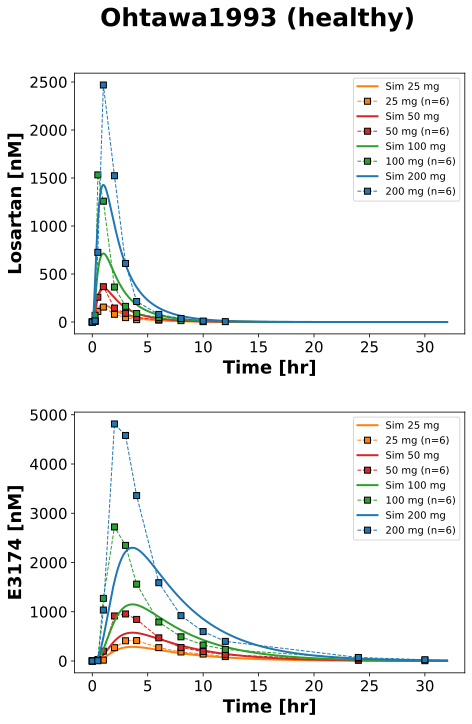
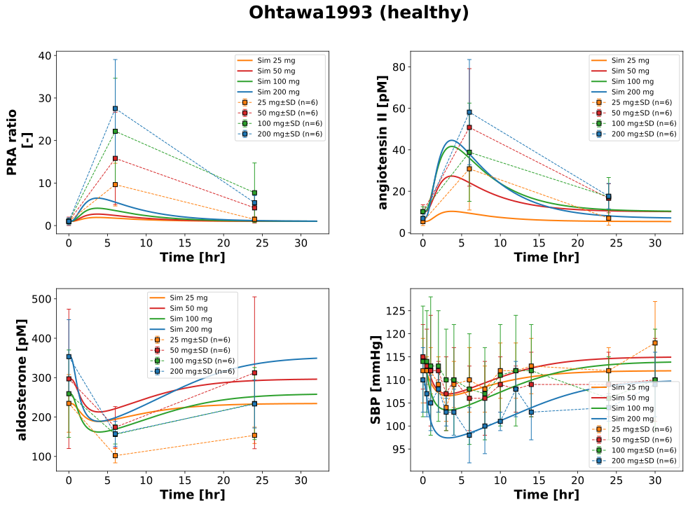
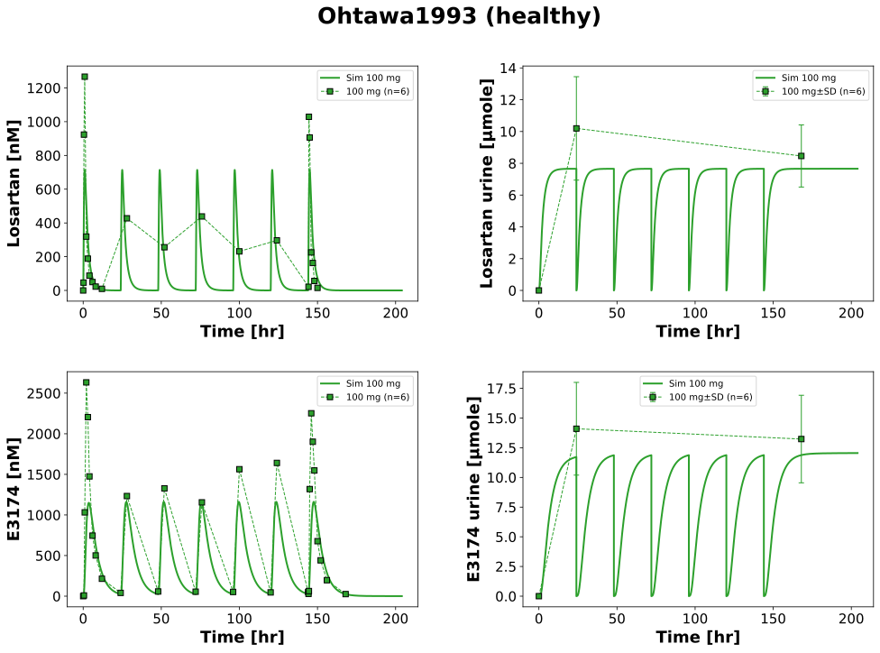
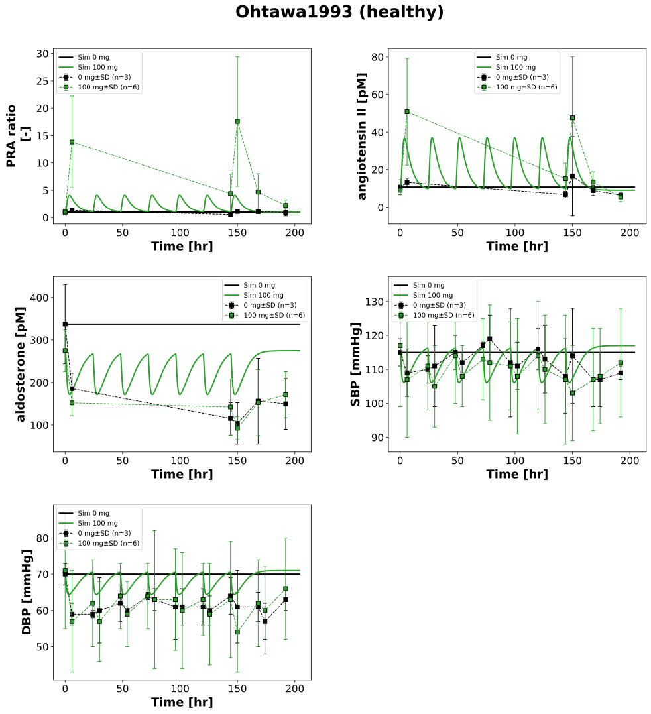

Overview
Models
| model | source |
|---|---|
| model | losartan_body_flat.xml |
Datasets
Figures (4)








Code
"""Simulation experiment of the study Ohtawa1993."""
from typing import ClassVar, override
import pandas as pd
from pkpdsim.metadata import (
ApplicationForm,
Coadministration,
Dosing,
Fasting,
Health,
PKPDMappingMetaData,
Route,
Tissue,
)
from sbmlsim import Q
from sbmlsim.data import DataSet
from sbmlsim.fit import FitData, FitMapping
from sbmlsim.plot import Axis, Figure
from sbmlsim.simulation import Change, Simulation
from sbmlsim.units import Quantity
from pkdb_models.models.losartan import MODEL
from pkdb_models.models.losartan.experiments.base_experiment import (
LosartanSimulationExperiment,
)
class Ohtawa1993(LosartanSimulationExperiment):
"""Simulation experiment of Ohtawa1993.
Healthy Japanese men (64.3 kg) in two studies with losartan potassium
capsules. Rising single oral doses of 25, 50, 100 and 200 mg after an
overnight fast (four panels of six subjects, no placebo) and multiple
doses of 100 mg losartan (n=6) or placebo (n=3) once daily for 7 days
(days 1 and 7 after an overnight fast, days 2-6 30 min after breakfast;
the model has no food effect, the doses are simulated alike). Losartan (as
potassium salt) and E3174 (as free acid) in plasma (Fig 1, 2) and urine
(0-24 hr after the doses of days 1 and 7, Tab 2A, % of the dose as
amounts in the copy), the plasma renin activity (PRA, mapped as the ratio
to the pre-dose value of the arm), angiotensin II and aldosterone (Fig 3,
4) and the blood pressure (Tab 3, 4), mean and SD. The baselines of the
RAAS and the blood pressure are the pre-dose values of every arm.
"""
interventions_single: ClassVar[dict[str, int]] = {
"LOS25": 25,
"LOS50": 50,
"LOS100": 100,
"LOS200": 200,
}
interventions_multi: ClassVar[dict[str, int]] = {"placebo": 0, "LOS100M": 100}
#: pre-dose angiotensin II [pg/ml], aldosterone [pg/ml] (Fig 3, 4) and
#: blood pressure [mmHg] (Tab 3, 4) of the arms
baselines: ClassVar[dict[str, dict[str, float]]] = {
"LOS25": {"ang2": 5.63, "ald": 84.55, "SBP": 112},
"LOS50": {"ang2": 10.58, "ald": 107.02, "SBP": 115},
"LOS100": {"ang2": 10.67, "ald": 93.45, "SBP": 114},
"LOS200": {"ang2": 7.22, "ald": 127.35, "SBP": 110},
"placebo": {"ang2": 11.20, "ald": 121.68, "SBP": 115, "DBP": 70},
"LOS100M": {"ang2": 9.44, "ald": 99.14, "SBP": 117, "DBP": 71},
}
#: observables of the pharmacodynamics and their data
info_pd: ClassVar[dict[str, str]] = {
"ren_ratio": "pra_ratio",
"[ang2]": "ang2",
"[ald]": "aldosterone",
"SBP": "sbp",
"DBP": "dbp",
}
colors: ClassVar[dict[int, str]] = {
0: "black",
25: "tab:orange",
50: "tab:red",
100: "tab:green",
200: "tab:blue",
}
bodyweight = 64.3 # kg
@override
def datasets(self) -> dict[str, DataSet]:
dsets = {}
for fig_id in ["Fig1", "Fig2", "Tab2A", "Tab3", "Tab4", "Fig3", "Fig4"]:
df = self.load_dataframe(fig_id)
for label, df_label in df.groupby("label"):
label = str(label)
if label.startswith("hr_") or "_recovery_" in label:
# heart rate and the recoveries in % are not used
continue
if label.startswith("pra_"):
# the plasma renin activity relative to the pre-dose value
dsets[label.replace("pra_", "pra_ratio_", 1)] = DataSet.from_df(
self.ratio_to_baseline(df_label), self.ureg
)
continue
dset = DataSet.from_df(df_label, self.ureg)
# unit conversion to mole/l; losartan is measured as potassium
# salt, E3174 as free acid; the urinary amounts are in µmole
if "_urine_" in label:
pass
elif label.startswith("losartan_"):
dset.unit_conversion("mean", 1 / self.Mr.losp)
elif label.startswith("exp3174_"):
dset.unit_conversion("mean", 1 / self.Mr.e3174)
elif label.startswith("ang2_"):
dset.unit_conversion("mean", 1 / self.Mr.ang2)
elif label.startswith("aldosterone_"):
dset.unit_conversion("mean", 1 / self.Mr.ald)
dsets[label] = dset
return dsets
@staticmethod
def ratio_to_baseline(df: pd.DataFrame) -> pd.DataFrame:
"""Get the values of a timecourse relative to its value at time 0.
Args:
df: the timecourse with a row at time 0.
Returns:
The timecourse as ratio to the value at time 0 (dimensionless).
"""
df = df.copy()
baseline = float(df.loc[df.time == 0, "mean"].iloc[0])
for column in ["mean", "mean_pm", "sd", "se"]:
if column in df.columns:
df[column] = df[column] / baseline
df["unit"] = "dimensionless"
return df
def baseline_changes(self, intervention: str) -> dict[str, Quantity]:
"""Get the changes of the baselines of the RAAS and blood pressure.
Args:
intervention: the arm.
Returns:
The changes of the reference values of the arm.
"""
baseline = self.baselines[intervention]
changes = {
"ang2_ref": Q(baseline["ang2"], "pg/ml") / self.Mr.ang2,
"ald_ref": Q(baseline["ald"], "pg/ml") / self.Mr.ald,
"SBP_ref": Q(baseline["SBP"], "mmHg"),
}
if "DBP" in baseline:
changes["DBP_ref"] = Q(baseline["DBP"], "mmHg")
return changes
@override
def simulations(self) -> dict[str, Simulation]:
tcsims = {}
# single dose
for intervention, dose in self.interventions_single.items():
tcsims[f"po_{intervention}"] = Simulation(
time_unit="min",
end=32 * 60,
preinit_changes={
**self.default_changes(),
"BW": Q(self.bodyweight, "kg"),
"PODOSE_los": self.losartan_dose(Q(dose, "mg")),
**self.baseline_changes(intervention),
},
)
# multiple dose
for intervention, dose in self.interventions_multi.items():
# a dose every 24 hr for 7 days, the urine is collected from dose
# to dose
tcsims[f"po_{intervention}_multi"] = Simulation(
time_unit="hr",
end=6 * 24 + 60,
preinit_changes={
**self.default_changes(),
"BW": Q(self.bodyweight, "kg"),
"PODOSE_los": self.losartan_dose(Q(dose, "mg")),
**self.baseline_changes(intervention),
},
changes=[
self.add_doses(
[24 * k for k in range(1, 7)],
{"PODOSE_los": self.losartan_dose(Q(dose, "mg"))},
),
Change(
[24 * k for k in range(1, 7)],
{
"Aurine_los": Q(0, "mmole"),
"Aurine_e3174": Q(0, "mmole"),
},
),
],
)
return tcsims
@override
def fit_mappings(self) -> dict[str, FitMapping]:
mappings = {}
# single dose, pharmacokinetics (no error bars) and pharmacodynamics
pk_single = {"[Cveplasma_los]": "losartan", "[Cveplasma_e3174]": "exp3174"}
pd_single = {k: v for k, v in self.info_pd.items() if k != "DBP"}
for intervention, dose in self.interventions_single.items():
for sid, name in {**pk_single, **pd_single}.items():
mappings[f"fm_po_{name}_{intervention}"] = FitMapping(
self,
reference=FitData(
self,
dataset=f"{name}_{dose}",
xid="time",
yid="mean",
yid_sd=None if sid in pk_single else "mean_sd",
count="count",
),
observable=FitData(
self,
task=f"task_po_{intervention}",
xid="time",
yid=sid,
),
metadata=PKPDMappingMetaData(
tissue=Tissue.NONE if sid == "SBP" else Tissue.PLASMA,
route=Route.PO,
application_form=ApplicationForm.CAPSULE,
dosing=Dosing.SINGLE,
health=Health.HEALTHY,
fasting=Fasting.FASTED,
coadministration=Coadministration.NONE,
),
)
# multiple dose, pharmacokinetics and pharmacodynamics; the doses of
# days 2-6 after breakfast
pk_multi = {
"[Cveplasma_los]": "losartan",
"Aurine_los": "losartan_urine",
"[Cveplasma_e3174]": "exp3174",
"Aurine_e3174": "exp3174_urine",
}
for intervention, dose in self.interventions_multi.items():
info = (
self.info_pd if intervention == "placebo" else pk_multi | self.info_pd
)
for sid, name in info.items():
mappings[f"fm_po_{name}_{intervention}_multi"] = FitMapping(
self,
reference=FitData(
self,
dataset=f"{name}_{dose}_multi",
xid="time",
yid="mean",
# the plasma concentrations of Fig 2 have no error bars
yid_sd=None if sid.startswith("[Cveplasma") else "mean_sd",
count="count",
),
observable=FitData(
self,
task=f"task_po_{intervention}_multi",
xid="time",
yid=sid,
),
metadata=PKPDMappingMetaData(
tissue=Tissue.URINE
if sid.startswith("Aurine")
else Tissue.NONE
if sid in {"SBP", "DBP"}
else Tissue.PLASMA,
route=Route.PO,
application_form=ApplicationForm.CAPSULE,
dosing=Dosing.MULTIPLE,
health=Health.HEALTHY,
fasting=Fasting.FED,
coadministration=Coadministration.NONE,
),
)
return mappings
@override
def figures(self) -> dict[str, Figure]:
return {
**self.fig1(),
**self.fig3_tab3(),
**self.fig2_tab2a(),
**self.fig4_tab4(),
}
def fig1(self) -> dict[str, Figure]:
"""Single dose, pharmacokinetics: losartan and E3174 in plasma."""
fig = Figure(
experiment=self,
sid="Fig1",
num_rows=2,
name=f"{self.__class__.__name__} (healthy)",
)
plots = fig.create_plots(
xaxis=Axis(self.label_time, unit=self.unit_time), legend=True
)
plots[0].set_yaxis(self.label_los, unit=self.unit_los)
plots[1].set_yaxis(self.label_e3174, unit=self.unit_e3174)
for k, (sid, name) in enumerate(
[("[Cveplasma_los]", "losartan"), ("[Cveplasma_e3174]", "exp3174")]
):
for intervention, dose in self.interventions_single.items():
# simulation
plots[k].add_data(
task=f"task_po_{intervention}",
xid="time",
yid=sid,
label=f"Sim {dose} mg",
color=self.colors[dose],
)
# data
plots[k].add_data(
dataset=f"{name}_{dose}",
xid="time",
yid="mean",
yid_sd=None,
count="count",
label=f"{dose} mg",
color=self.colors[dose],
)
return self.figures_by_sid(fig)
def fig2_tab2a(self) -> dict[str, Figure]:
"""Multiple dose, pharmacokinetics: losartan and E3174 in plasma and urine."""
fig = Figure(
experiment=self,
sid="Fig2_Tab2A",
num_rows=2,
num_cols=2,
name=f"{self.__class__.__name__} (healthy)",
)
plots = fig.create_plots(
xaxis=Axis(self.label_time, unit=self.unit_time), legend=True
)
plots[0].set_yaxis(self.label_los, unit=self.unit_los)
plots[1].set_yaxis(self.label_los_urine, unit=self.unit_los_urine)
plots[2].set_yaxis(self.label_e3174, unit=self.unit_e3174)
plots[3].set_yaxis(self.label_e3174_urine, unit=self.unit_e3174_urine)
dose = self.interventions_multi["LOS100M"]
for k, (sid, name) in enumerate(
[
("[Cveplasma_los]", "losartan"),
("Aurine_los", "losartan_urine"),
("[Cveplasma_e3174]", "exp3174"),
("Aurine_e3174", "exp3174_urine"),
]
):
# simulation
plots[k].add_data(
task="task_po_LOS100M_multi",
xid="time",
yid=sid,
label=f"Sim {dose} mg",
color=self.colors[dose],
)
# data
plots[k].add_data(
dataset=f"{name}_{dose}_multi",
xid="time",
yid="mean",
yid_sd="mean_sd" if "urine" in name else None,
count="count",
label=f"{dose} mg",
color=self.colors[dose],
)
return self.figures_by_sid(fig)
def fig3_tab3(self) -> dict[str, Figure]:
"""Single dose, pharmacodynamics: PRA, angiotensin II, aldosterone, SBP."""
fig = Figure(
experiment=self,
sid="Fig3_Tab3",
num_rows=2,
num_cols=2,
name=f"{self.__class__.__name__} (healthy)",
)
plots = fig.create_plots(
xaxis=Axis(self.label_time, unit=self.unit_time), legend=True
)
sids = ["ren_ratio", "[ang2]", "[ald]", "SBP"]
for k, sid in enumerate(sids):
plots[k].set_yaxis(self.labels[sid], unit=self.units[sid])
plots[0].set_yaxis("PRA ratio\n", unit=self.units["ren_ratio"])
for k, sid in enumerate(sids):
name = self.info_pd[sid]
for intervention, dose in self.interventions_single.items():
# simulation
plots[k].add_data(
task=f"task_po_{intervention}",
xid="time",
yid=sid,
label=f"Sim {dose} mg",
color=self.colors[dose],
)
# data
plots[k].add_data(
dataset=f"{name}_{dose}",
xid="time",
yid="mean",
yid_sd="mean_sd",
count="count",
label=f"{dose} mg",
color=self.colors[dose],
)
return self.figures_by_sid(fig)
def fig4_tab4(self) -> dict[str, Figure]:
"""Multiple dose, pharmacodynamics: RAAS and blood pressure."""
fig = Figure(
experiment=self,
sid="Fig4_Tab4",
num_rows=3,
num_cols=2,
name=f"{self.__class__.__name__} (healthy)",
)
plots = fig.create_plots(
xaxis=Axis(self.label_time, unit=self.unit_time), legend=True
)
sids = list(self.info_pd)
for k, sid in enumerate(sids):
plots[k].set_yaxis(self.labels[sid], unit=self.units[sid])
plots[0].set_yaxis("PRA ratio\n", unit=self.units["ren_ratio"])
plots[5].xaxis = None # empty panel
for k, sid in enumerate(sids):
name = self.info_pd[sid]
for intervention, dose in self.interventions_multi.items():
# simulation
plots[k].add_data(
task=f"task_po_{intervention}_multi",
xid="time",
yid=sid,
label=f"Sim {dose} mg",
color=self.colors[dose],
)
# data
plots[k].add_data(
dataset=f"{name}_{dose}_multi",
xid="time",
yid="mean",
yid_sd="mean_sd",
count="count",
label=f"{dose} mg",
color=self.colors[dose],
)
return self.figures_by_sid(fig)
if __name__ == "__main__":
MODEL.run_experiments(Ohtawa1993, output_dir=Ohtawa1993.__name__)